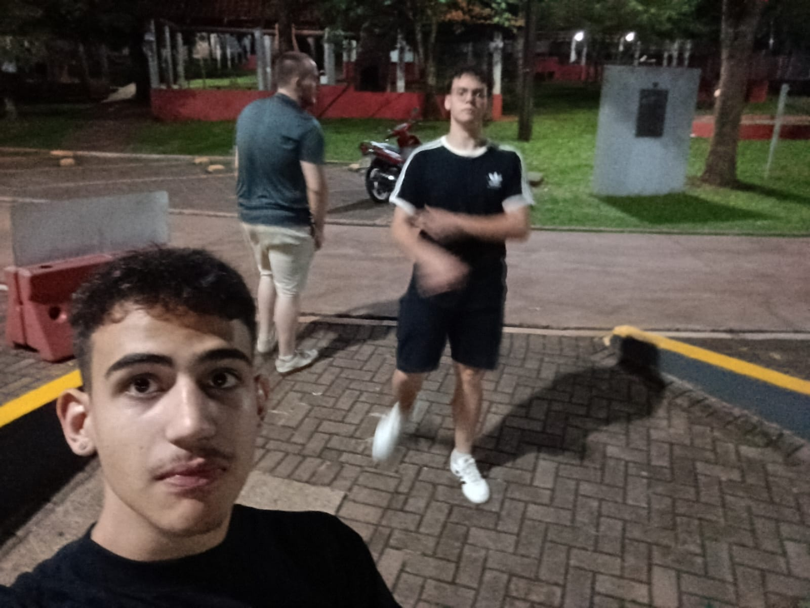

Nasci no dia 19/02/2009 na cidade de Cascavel - PR
Top 3 Alistar toplane do server BR de league of legends S15 segundo split
Sou o da esquerda😁
Descobri na época da pandemia meu interesse na área da informática, tendo meu primeiro contato com isso por meio de gameDev, porém com o tempo passando eu ingressei no IFPR no curso de informática, e aqui descobri um interesse pela área de engenharia de software nos primeiros anos, porém esse interesse logo foi substituido pela área de cyber segurança, o que é a área que eu me interesso hoje em dia e planejo seguir uma carreira nela